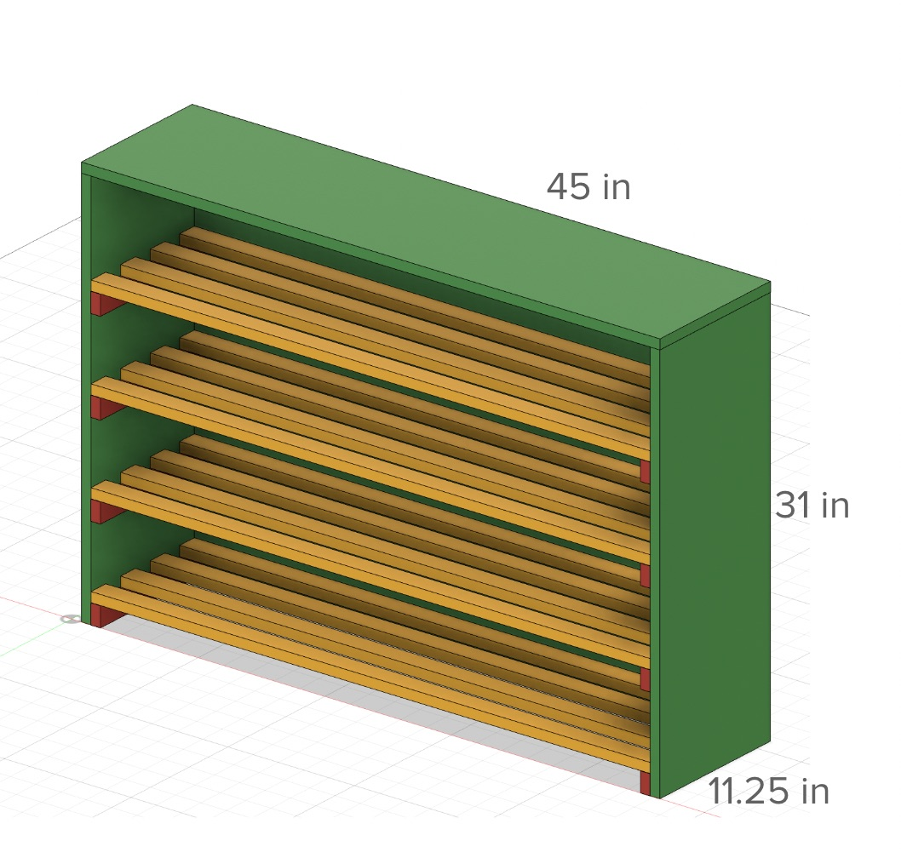
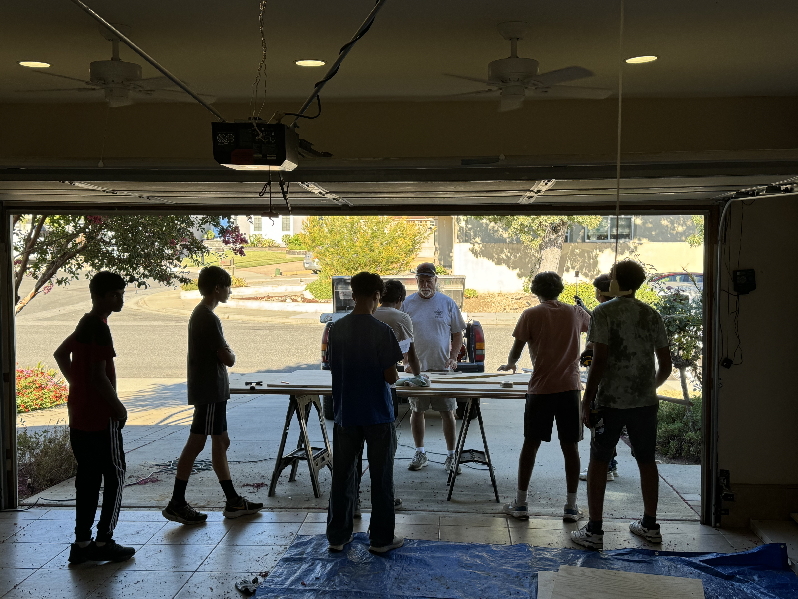
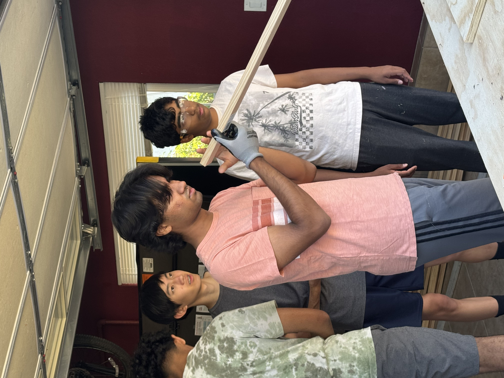
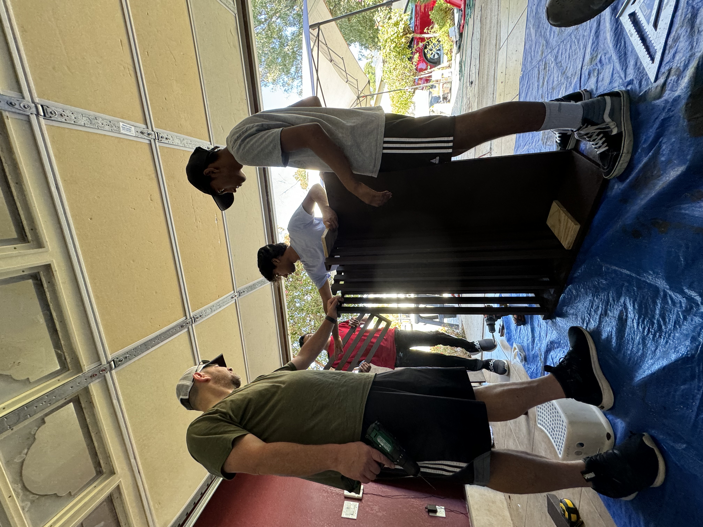
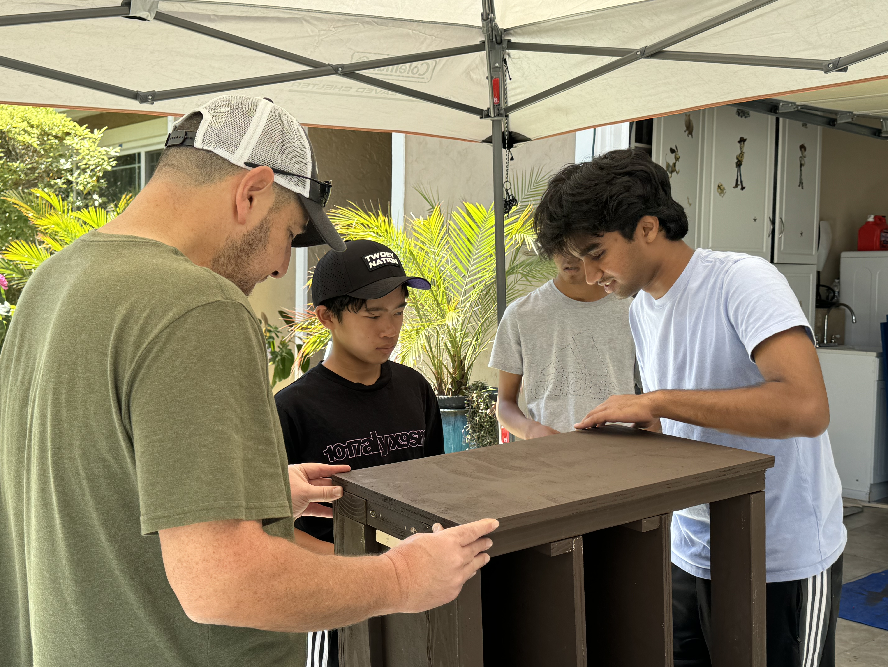
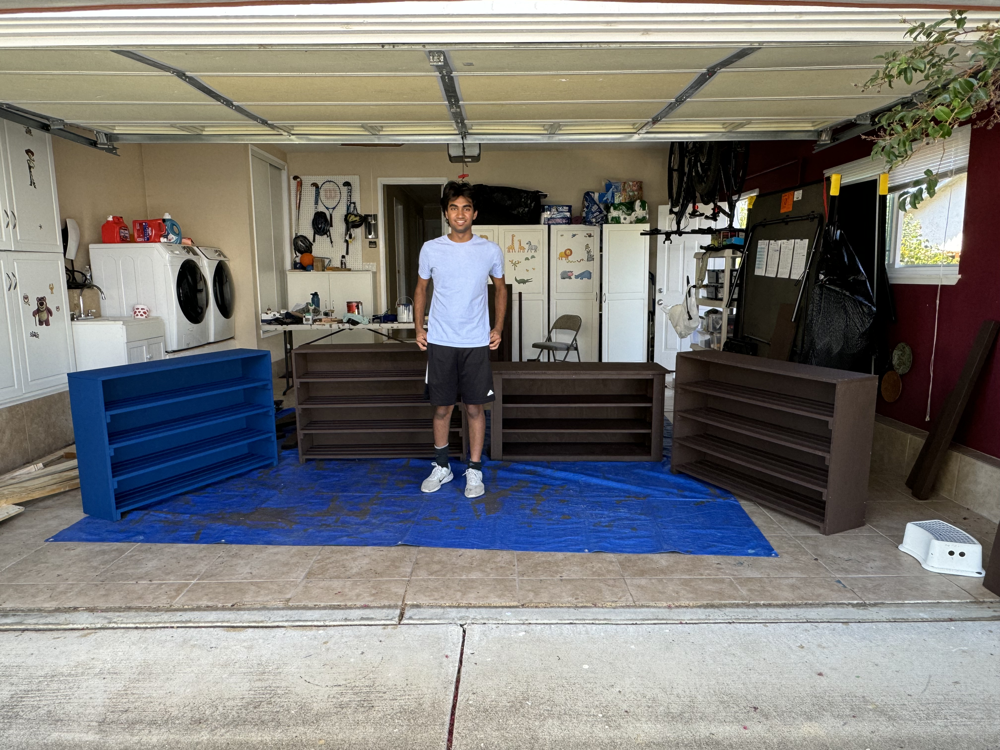
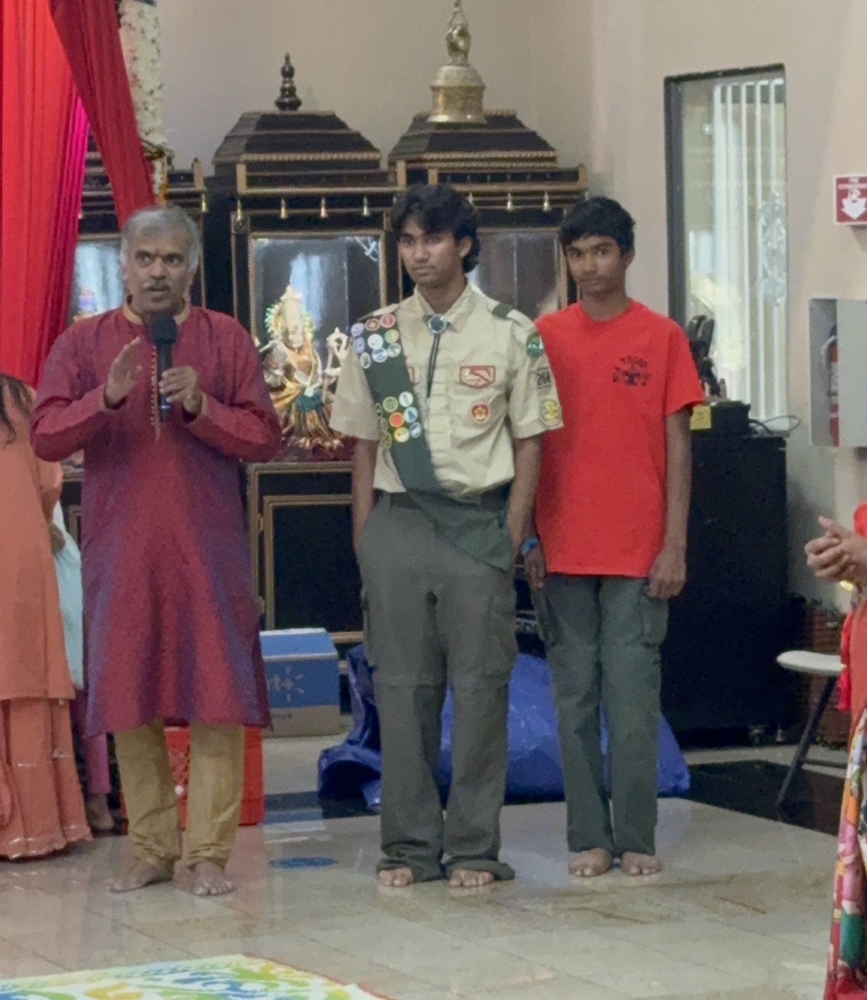
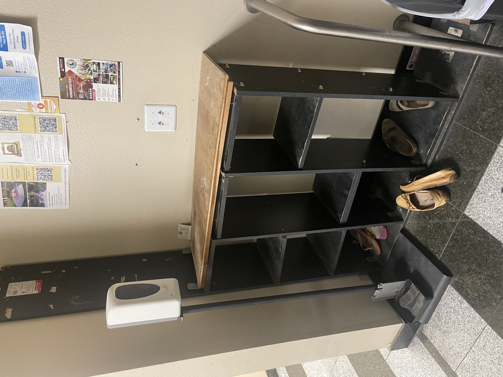

As a part of my journey to become an Eagle Scout, I've completed an Eagle Scout Service project. This involves researching, designing, planing, leading, and executing a service project for a nonprofit that I'm passionate about, completely by myself (but with lots of guidance).
I chose to built 5 shoe-racks/benches for my local temple, which was struggling to manage the large volume of shoes that people would leave in the shoe storage room on festival days. See some pictures from the project below!
Months of learning how to design woodworking, several failed designs, and mastering 3D rendering culminated in this design for my bench, reinforced by sturdy 2x4s.

The design I rendered of my shoe racks, which aren't sturdy enough to sit on but are good for bulk storage.

A small portion of the many materials needed for my project.

Me leading my first build day: tons of sawing and cutting with my scoutmaster!

Discovering during the first build day that I accidentally purchased warped (bent) wood. This would make the project much more difficult.

Holding the 2x4 wooden frame for the benches in place while I show another scout how to drill in the screws straight.

Our first approach to assemble the shoe racks was incredibly difficult. Here, I'm explaining a more efficient method of turning it onto it's side.

Pointing out a missed spot to a fellow scout who's painting the wood we freshly cut.

My scoutmaster and I aligning the side panel of one of the benches, so that we can drill it in later.

Holding a shelf piece in place as one of my volunteer scouts drills it in.

The final bench product! Despite all the warping issues, it turned out great!

Posing in front of 4 out of 5 completed pieces of furniture (I'm completely exhausted!).

My brother and I proving the durability of our benches, after we installed it into our local temple.

My mom and I after I earned my City Hall commendation award!

My temple organizer praising my project to everyone at the temple after I installed it (I was super proud!).

The old rack in the shoe room before I replaced it.

This blue shoe rack I used to replace the old black one.

Some of the other shoe racks, installed into the room.